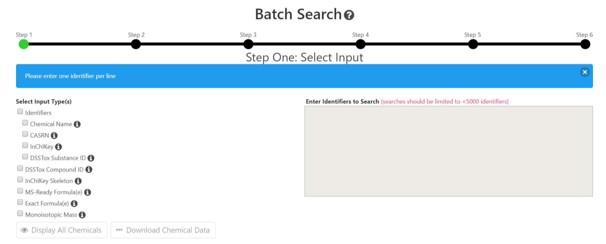
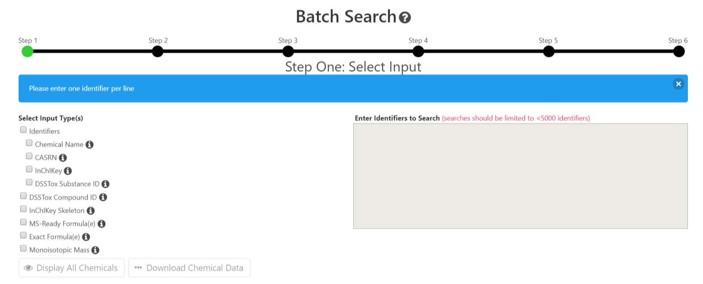

EPA Projects
Provided standardized UI designs and re-designs of existing web application UI for the Chemistry Dashboard. Chemistry Dashboard: Batch search feature UI design

CompTox UI change proposals:


Provided standardized UI designs and re-designs of existing web application UI for the Chemistry Dashboard. Chemistry Dashboard: Batch search feature UI design

CompTox UI change proposals: